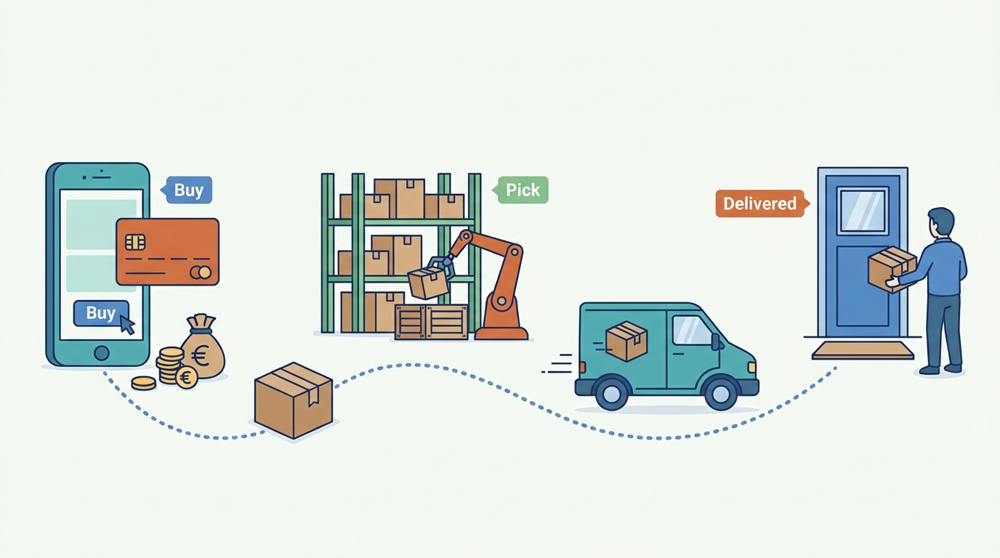

Part I — COMMERCE: What a Commerce Platform Is
Follow the Order: What Happens Between “Buy” and “Delivered”
AI-assisted: researched and written with Claude Code and Codex; illustrations generated with Gemini and OpenAI image tools. How this works
